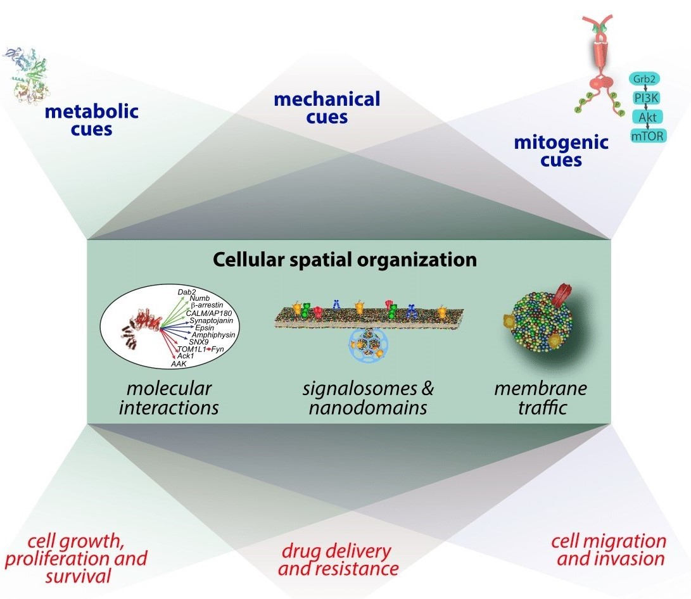
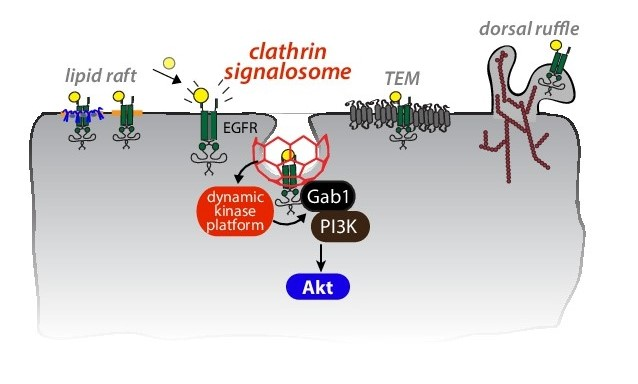
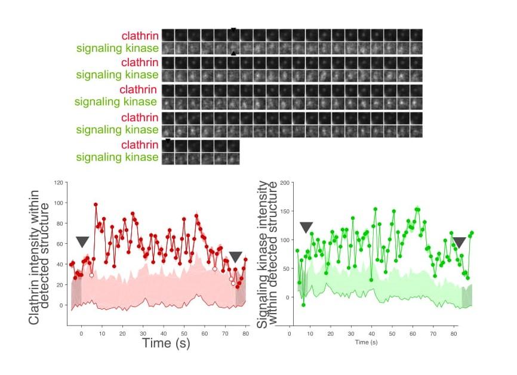
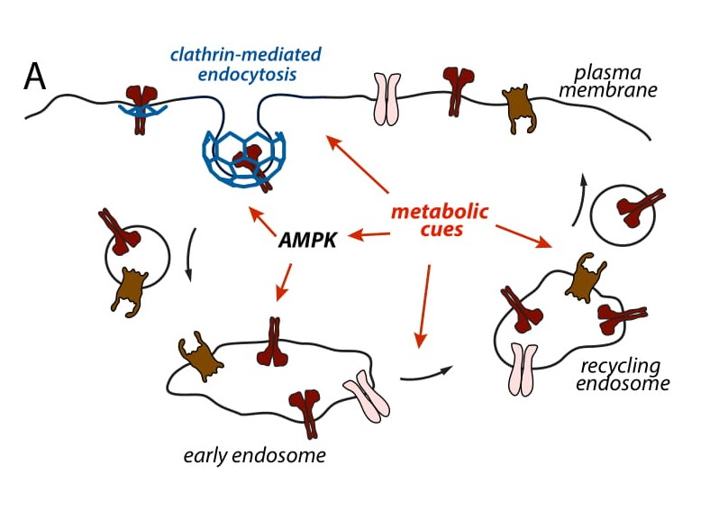
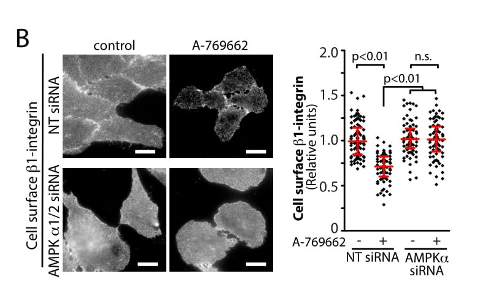

Cells are made up of diverse and interconnected signaling networks that control every aspect of cell function
and physiology. These signaling networks are able to respond to various cues, either extrinsic (e.g. growth
factors and hormones) or intrinsic (e.g. cell metabolism). In doing so, various aspects of cell physiology
such as proliferation, growth and migration are modulated in response to these signals. Disruption of how
these cell physiology processes are controlled by extrinsic or intrinsic cues contributes to and drives the
progression of diseases such as cancer and diabetes.
We are interested in understanding how cells sense and respond to various cues, including
chemical cues such as growth factors,
mechanical cues , and
metabolic cues , to lead to regulation cell proliferation, growth and migration
(Figure 1) . Moreover, we aim to understand how these processes can be therapeutically exploited
for the development of new cancer drugs and new strategies for targeted drug delivery, as well as the identification
of new cancer biomarkers. We are focused on understanding how chemical, mechanical and metabolic cues impact
various molecular assemblies inside cells, starting with
protein-protein interactions that in turn lead to formation of transient and
dynamic plasma membrane microdomains and
signaling platforms, and how these in turn control membrane traffic, in particular the process of
clathrin-mediated endocytosis, and
receptor signaling, in particular that of the epidermal growth factor (EGF) receptor (EGFR).

Figure 1. Overall research interests of the Antonescu lab. We are interested in studying the regulation of dynamic nanoscale molecular assemblies, signaling processes
and membrane traffic by various intrinsic and extrinsic signals, and how this regulation contributes to control
of cell physiology, including cell growth and proliferation, and migration. Further, we aim to develop strategies
to therapeutically modulate these phenomena, such as to achieve targeted drug delivery.
Control of receptor signaling by plasma membrane clathrin structures.
Receptor tyrosine kinases (RTKs) are a family of 58 receptors that control cell proliferation, survival,
migration and invasion. We focus on study of the epidermal growth factor receptor (EGFR), which drives
progression of several types of cancer including triple negative breast cancer, non small cell lung cancer
and glioblastoma multiforme. Upon binding EGF, the EGFR undergoes autophosphorylation and activation of
a number of intracellular signaling pathways, including phosphatidylinositol-3kinase (PI3K)-Akt and Ras-mitogen
activated protein kinase (MAPK) that mediate the control of cell physiology by EGFR. Many of the receptor-proximal
signals are activated at the plasma membrane.
Concomitantly to activation of receptor-proximal signaling intermediates, EGFR is recruited into clathrin
structures at the plasma membrane. Clathrin, together with ~50-100 other proteins assembles into 50-200
nm structures associated with the inner leaflet of the plasma membrane. Some of the clathrin structures
at the plasma membrane are clathrin-coated pits, which mediate the internalization and eventual long-term
downregulation of EGFR. We have discovered that plasma membrane clathrin structures have an additional
function at the plasma membrane that is either distinct from or precedes receptor internalization (
Garay et al, MBoC, 2015 ,
Lucarelli et al. Commun Integr Biol. 2016) . Perturbations of clathrin impaired EGFR signaling leading to Akt phosphorylation. Importantly, perturbation
of the GTPase dynamin2, which allows EGFR recruitment into clathrin structures but blocks receptor internalization,
did not impact EGFR signaling.

Figure 2. Regulation of receptors by clathrin signaling domains. We are studying how plasma membrane
clathrin structures, which we term clathrin signalosomes, control signaling of certain receptors such as
EGFR, by acting as dynamic platforms for the recruitment of key kinase(s) and other signaling regulators.
We thus proposed that some plasma membrane clathrin structures form signaling-specialized structures that
we term
clathrin signalosomes (Figure 2). These clathrin signalosomes are required for EGFR signaling leading to Akt phosphorylation. We identified
that phosphorylation of the adaptor Gab1 by EGFR is the most upstream clathrin-dependent signaling event,
and suggested that clathrin signalosomes control EGFR signaling by dynamically scaffolding specific kinase(s),
allowing spatiotemoral connection of the signaling circuit from EGFR to downstream intracellular intermediates.
We have also identified that the clathrin structures in which EGFR resides are unique and specialized
(Delos Santos et al, MBoC, 2017). EGFR is found in plasma membrane clathrin structures that are distinct from those containing other receptors
(e.g. transferrin receptor). Furthermore, the clathrin structures that contain EGFR (including clathrin
signalosomes) are uniquely regulated by calcium signals. As such, clathrin structures such as signalosomes
represent important platforms sensitive to multiple signaling cues and inputs, and thus represent a core
node in cross-talk between different signaling pathways and systems.
Figure 3-A. Study of signal molecular dynamics. We use various forms of microscopy coupled to automated
image analysis of cells expressing fluorescently-tagged scaffolds and signaling proteins to uncover the
dynamics and nanoscale spatiotemporal organization of signals at the plasma membrane. Shown in (3-A) is
a time-lapse of cells expressing fluorescent clathrin (red) and another signaling protein (green), with
computer-based detection and tracking of structures as per Aguet et al. Dev Cell 2013 overlayed.

Figure 3-A. Shown in (3-B) is a representative dynamic structure harboring both clathrin and this
signaling protein.
We are working to identify
(i) The mechanism by which clathrin structures control receptor signaling at the plasma membrane,
(ii) How signaling-specialized clathrin structures form at the plasma membrane
(iii) How clathrin signalosomes are regulated and
(iv) How clathrin structures contribute to cancer cell growth, proliferation and drug resistance. To
do so, we use various forms of total internal reflection fluorescence (TIRF) and super-resolution microscopy,
and single-particle tracking of EGFR coupled to automated image analysis
(Figure 3) to detect, track and analyze clathrin signalosomes, receptors and signaling molecules.
(v) Furthermore, using various cellular and in vivo models, we aim to identify how clathrin signalosomes contribute to tumor
progression and to the development of resistance to existing drug therapies, focusing on breast cancer.
Dynamic control of the cell surface proteome by cell metabolism.
All cells interact with their environment through proteins present on their outer surface. The dynamic localization of each
protein to the cell surface is critical in regulating its function, as the extracellular milieu contains
soluble ions, nutrients, hormones, and adhesion sites. Cells must specifically and rapidly regulate each
cell surface protein to adapt to changing needs in order to maintain homeostasis and ensure survival. There
are a large number of metabolic pathways and systems within cells. Given the critical importance of many
of these metabolites to cell physiology and survival, cells must be able to sense changes in flux and availability
of various metabolites. In the event of scarcity of specific metabolites or altered metabolic flux, cells
must be able to rapidly engage specific signaling responses that can ensure cell survival during the period
of metabolic insufficiency, and in some cases engage in long-term cellular adaptation.

Figure 4-A. Metabolic stress and AMPK regulate cell surface protein membrane traffic. (4-A) Diagram
of endomembrane traffic, showing clathrin-mediated endocytosis, sorting and recycling. We aim to understand
how AMPK and other metabolic sensors regulate these phenomena, focusing on clathrin- mediated endocytosis.
One of the most critical metabolic molecules is ATP, which undergoes hydrolysis to facilitate a wide range of catabolic reactions
in the cell. Metabolic stress in the form of reduced ATP availability (i.e. an increase in AMP:ATP ratio)
triggers activation of AMP-activated protein kinase (AMPK). Once activated, AMPK triggers activation of
many signals, generally leading to either energy conservation (restraint of anabolic pathways) and increased
nutrient uptake or catabolism. Central to both of these processes are cell surface proteins, many of which
control some of the most ATP-demanding cellular processes such as establishment of membrane potential and
cell migration. Yet other proteins of the cell surface are responsible for the uptake of specific nutrients
such as glucose and amino acids. Hence, it is quite reasonable to expect that AMPK controls the levels
and activity of various cell surface proteins, perhaps through control of membrane traffic processes to
ensure homeostasis and adaptation during metabolic stress conditions
(Figure 4A).

Figure 4-B. Metabolic stress and AMPK regulate cell surface protein membrane traffic. (4-B) AMPK
activation (using the AMPK agonist A769662) decreases cell-surface levels of b1-integrin, as per
(Ross et al. 2015, PLoS ONE).
We recently published a mass spectrometry-based study that found that AMPK robustly regulates the cell surface
content of many proteins, in particular of cell adhesion and migration proteins such as β1-integrin
(Figure 4B,
Ross et al. 2015, PLoS ONE ). The control of membrane traffic of β1- integrin results in
robust control of cell migration by AMPK. There remains much to be learned about the mechanism by which
AMPK controls membrane traffic phenomena such as clathrin-mediated endocytosis. Moreover, it also not known
how other metabolic sensors and cues may orthogonally to AMPK to control cell surface membrane traffic.
In addition, the control of membrane traffic by metabolic cues not only controls the cell surface levels
of specific proteins, but also controls the function of transcriptional circuits dependent on membrane-associated
proteins. We have recently identified that mTORC1, another metabolic sensor activated by amino acid abundance
and inactivated by AMPK, controls the nuclear translocation of glycogen synthase kinase 3β (GSK3β), thus
impacting c-myc and snail-dependent transcriptional circuits
(Bautista et al, BioRxiv, 2018). Notably, GSK3β is localized to various endomembranes and regulation of GSK3β nuclear localization was
highly dependent on membrane traffic. Hence, metabolic signals also control transcriptional circuits by
regulating membrane traffic and thus membrane- associated transcriptional regulators.
We are working to identify:
(i) how AMPK broadly controls cell surface membrane traffic, by focusing on regulation of clathrin-mediated
endocytosis
(ii) how other metabolic cues and signals control membrane traffic, focusing on mTORC1 and post-translational
modification by N-acetyl glucosamine
(iii) how this control of membrane traffic leads to control of transcription factors that dependent on
endomembranes as signaling platforms.
Phosphoinotides and membrane traffic: from inositol phosphorylation to acyl chain remodeling.
The regulated phosphorylation of phosphatidylinositol (PI) gives rise to seven different species of phosphoinositide
(PIP) lipids. PIPs are key regulators of membrane traffic and cellular signaling. PI and PIPs are unique
among other phospholipids as they exhibit a remarkable specificity of acyl chains, such that 50-70% of
PI/PIPs have an 18:0/20:4 acyl chain profile. Recent work indicated that the acyltransferase LYCAT regulates
the incorporation of 18:0 into the sn-1 position of PIPs, and thus contributes to the acyl profile specificity
of PIPs.
We recently published work examining how the control of PIP acyl chains by LYCAT controls the levels, localization
and function of specific PIPs
(Bone et al. MBoC, 2017). We found that perturbation of LYCAT resulted in a reduction of the levels of specific PIPs, namely phosphatidylinositol-4,5-
bisphosphate (PIP2) and phosphatidylinositol-3- phosphate (PI3P), but not others such as phosphatidylinositol-4-
phosphate (PI4P). Importantly, cell biological processes dependent on PIP2 and PI3P, such as clathrin-mediated
endocytosis and traffic to and from the early endosome, were disrupted in LYCAT silenced cells. In contrast,
disruption of LYCAT did not impact biosynthetic membrane traffic, which is dependent on PI4P. Lastly, we
observed that LYCAT localizes to a unique population of ER-derived vesicles that contain phosphatidylinositol
synthase (PIS), suggesting that LYCAT and PIS functions may be coordinated during the generation of PI
and certain PIPs to produce lipid species with enrichment of 18:0/20:4 acyl chain profiles during PI/PIP
synthesis.
We are currently focused on understanding how LYCAT controls the levels and localization of specific PIP
species such as PIP2 and PI3P. Moreover, we aim to understand how the control of PIP species by LYCAT can
impact growth, proliferation, survival and invasion in certain types of cancer cells. In particular, given
the importance of mutations or other alterations that result in amplification of the PI3K signaling axis
in many cancers, understanding how LYCAT controls the function of specific phosphoinositides could reveal
new strategies to target specific cancer cells, which may be most relevant in PI3K-dependent cancers.
Targeted drug delivery by therapeutic manipulation of endocytosis.
Treatment for many types of cancer involves the systemtic administration of various chemotherapies or other
drugs. One of the major challenges in treatment of cancer by this approach is achieving selective effects
on cancer cells, under conditions that have a more modest impact on healthy cells throughout the body and
would thus be compatible with patient treatment. The development of new strategies that can maximize the
impact of therapies on cancer cells and limit effects on healthy tissues are very promising to the improvement
of treatment outcomes for cancer patients
To accomplish this, several strategies for targeted delivery of drugs to tumors have been developed. One
such strategy is antibody-drug conjugates (ADCs), in which a cytotoxic drug is covalently linked to a therapeutic
antibody, resulting in delivery of cytotoxic drugs to tumor cells with a particular marker. We are interested
in developing strategies to enhance the delivery and internalization of ADCs into target cells in order
to enhance specificity and efficiency of these treatments.
We are also working to develop new approaches to achieve targeted delivery of systemically- administered
drugs that are not targeted to tumors by virtue of molecular ligands. As we have recently published
(Fekri et al, 2016, PLoS ONE), we are working to develop methods using ultrasound to manipulate intrinsic mechanisms of endocytosis
within cancer cells in order to achieve targeted and selective delivery of existing chemotherapeutic agents
into cancer cells, and thus improve patient outcomes for treatment with these drugs.